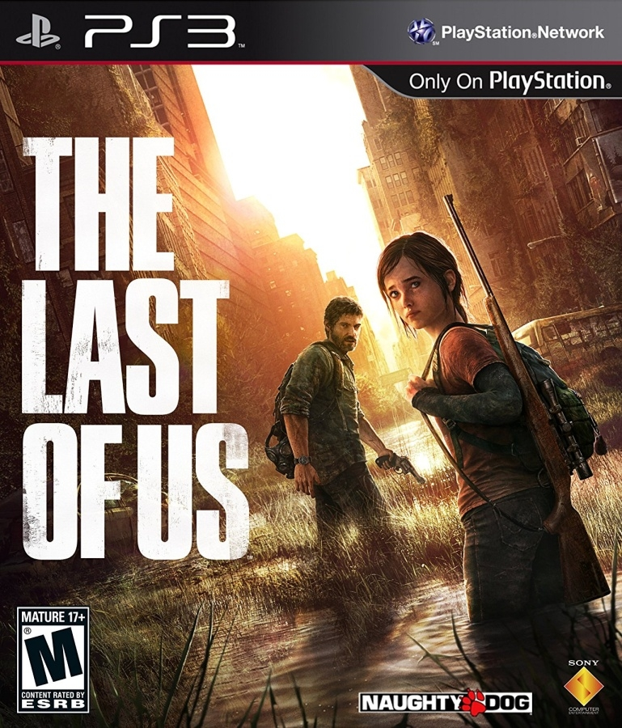
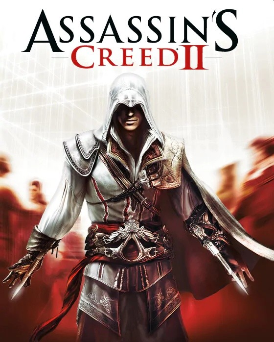
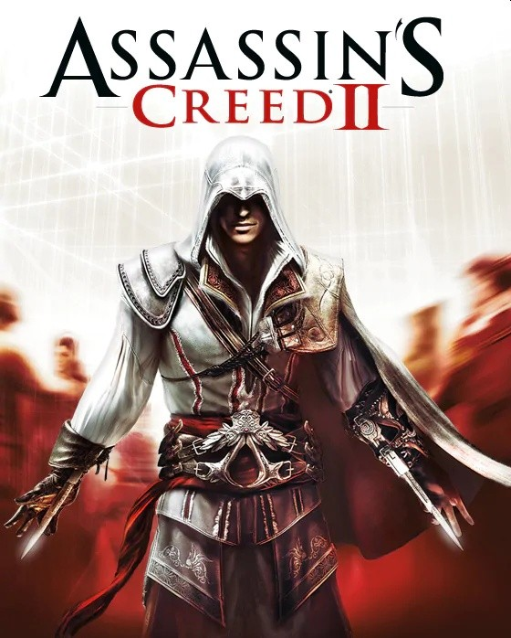
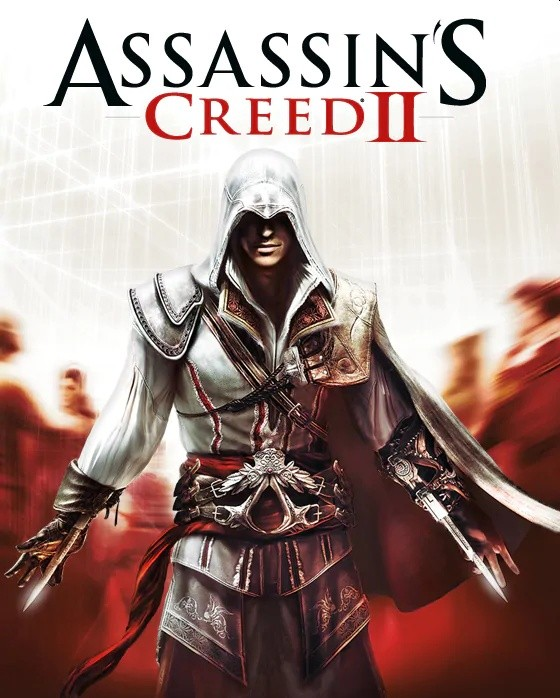

Playstation 3: Uma nova era de jogos e entretenimento
O PlayStation 3, lançado em 2006, marcou uma nova era na indústria dos videogames, introduzindo tecnologias de ponta e expandindo os limites do entretenimento doméstico. O PlayStation 3 consolidou a posição da Sony como líder no mercado de videogames e preparou o terreno para o sucesso do PlayStation 4. Seu legado inclui a popularização do formato Blu-ray, a evolução dos jogos online e a introdução de novas tecnologias que moldaram a indústria dos videogames.

Por que ele foi tão importante?
- Jogos exclusivos: O PS3 foi lar de franquias icônicas como Uncharted, The Last of Us, Gran Turismo e LittleBigPlanet.
- Retrocompatibilidade: Alguns modelos do PS3 eram retrocompatíveis com jogos de PlayStation 2.
- Multimídia: Além de jogos, o PS3 podia reproduzir filmes em Blu-ray, DVDs, CDs de áudio e fotos digitais.
Jogos

 



Algumas curiosidades:
- O PS3 foi lançado em três versões principais: Fat, Slim e Super Slim.
- O jogo mais vendido para o PS3 foi Grand Theft Auto V.
- O PS3 foi descontinuado em 2017.